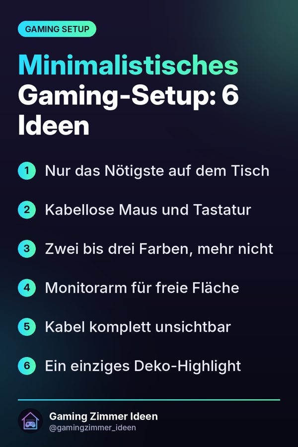

Minimalistisches Gaming-Setup: 6 Ideen für einen cleanen Look

Clean Gaming Setup: Nur das Nötigste auf dem Tisch, kabellose Maus und Tastatur, wenige Farben, ein Monitorarm für freie Fläche, komplett unsichtbare Kabel und ein einziges Deko-Highlight. Weniger ist mehr – so sieht dein Setup ruhig, modern und aufgeräumt aus. Jetzt merken!
Auf einen Blick
- Nur das Nötigste auf dem Tisch
- Kabellose Maus und Tastatur
- Zwei bis drei Farben, mehr nicht
- Monitorarm für freie Fläche
- Kabel komplett unsichtbar
- Ein einziges Deko-Highlight